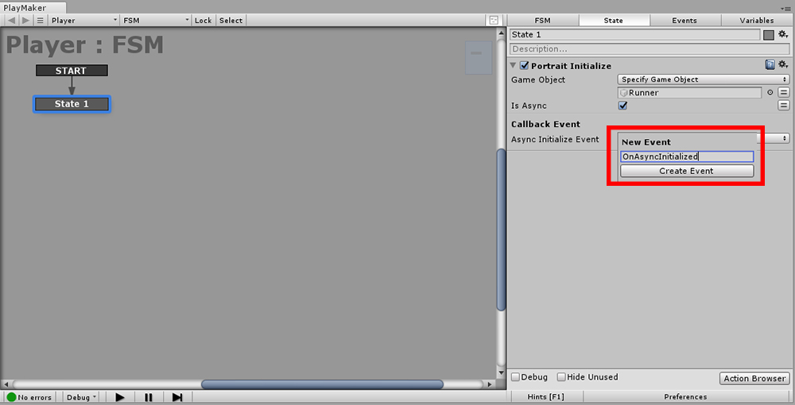
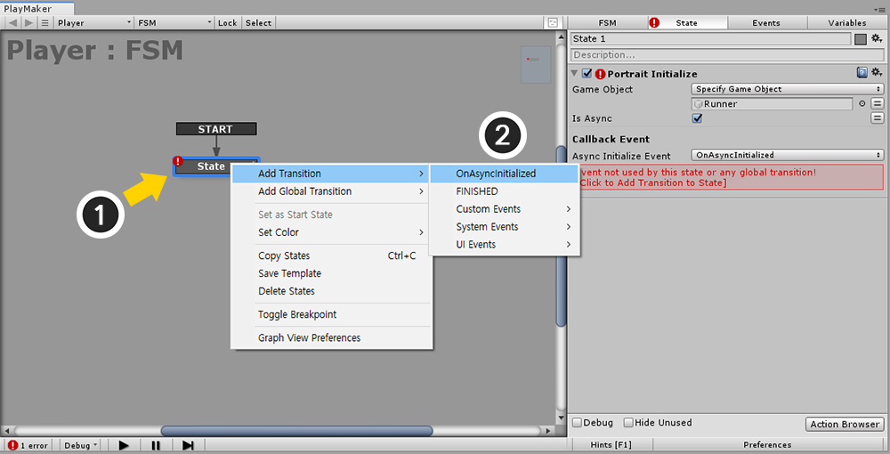
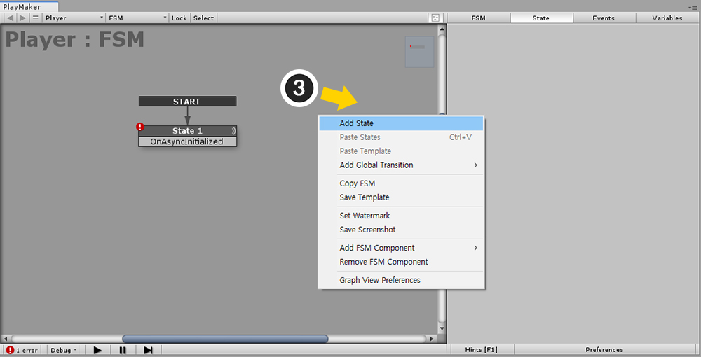
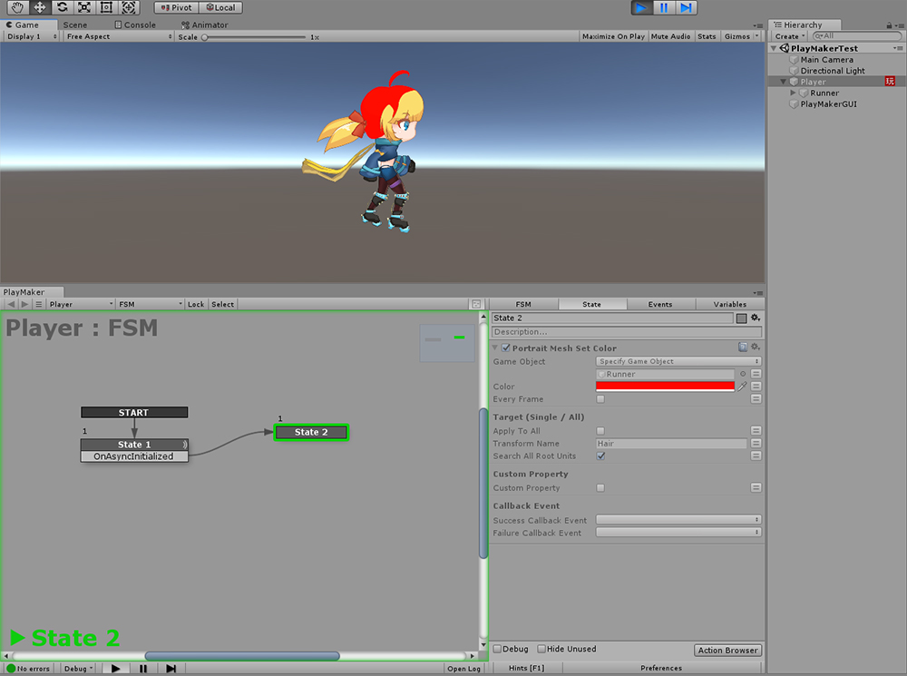

AnyPortrait > マニュアル > PlayMaker™と連動する
PlayMaker™と連動する
1.1.6
PlayMaker™はHutong Games™で制作したFSM（Finite-State Machine）ベースのユニティエディタアセットです。
スクリプトを作成しなくてもPlayMaker™を利用して、ゲームをすばやく作成できます。
PlayMaker™を利用してゲームを制作する方のために、AnyPortraitのスクリプト機能を「Custom Actions (カスタムアクション)」で作成して配布します。
このページでは、PlayMaker™の使用方法については説明しなかったし、AnyPortraitとPlayMaker™を連動するためのCustom Actionを適用する方法について簡単に説明します。
- Hutong Games™ホームページ
- PlayMaker™Asset Storeのページ
まず、下記のリンクから「AnyPortrait-PlayMaker Custom Actionパッケージ」をダウンロードして、ユニティプロジェクトにImportします。
最新バージョン（v1.1.6基準）
- AnyPortrait-PlayMaker Custom Actionパッケージをダウンロードする（2019年5月18日ビルド）
以前のバージョン
- AnyPortrait-PlayMaker Custom Actionパッケージをダウンロードする（2019年1月9日ビルド）
注意事項
- このパッケージには、Hutong Games™で製作した公式のパッケージではなく、RainyRizzleチームで製作したパッケージです。
- 「AnyPortrait v1.1.5」と「PlayMaker™ v1.9.0」に合わせて開発されました。
- AnyPortraitとPlayMaker™がプロジェクトに最初にインストールする必要があります。

(1) 「AnyPortrait」と (2) 「PlayMaker™」と (3) 「AnyPortrait-PlayMaker Custom Actionパッケージ」をインストールします。
PlayMaker™のFSMを追加するGameObjectを選択した後、PlayMaker Editorを実行します。

(1) PlayMaker Editorの空きスペース上でマウスの右ボタンをクリックします。
(2) 「Add FSM」項目をクリックします。

FSMが作成され、同時に「State 1」も、基本的に追加されました。

ここで例としてAnyPortraitの関数の「Initialize()」関数をCustom Actionに呼び出してみましょう。
この関数は、更新される最初のフレームで自動的に実行されるので、ユーザーが特殊な場合を除いては、あえて実装しなくてもされます。
しかし、PlayMaker™でCustom Actionをテストするために、ここでの初期化関数を直接呼び出してみましょう。
(1) 「State 1」をクリックします。
(2) 「State」タブを選択します。
(3) 「Action Browser」ボタンを押してアクション（Action）のリストを開きます。
(4) PlayMakerの様々なアクションの中で「AnyPortrait」カテゴリーを広げ、「Portrait Initialize」アクションを選択します。
(5) 「Add Action To State」ボタンを押します。

FSMが生成されたGameObjectがapPortraitが含まれていない場合、エラーが発生する可能性があります。
(1) Game Object項目の「Use Owner」のドロップダウンメニューをクリックし、(2) 「Specify Game Object」を選択します。

apPortraitが含まれているGameObjectをドラッグして、「None（Game Object）」のスロットに移動します。

今エラーが消え、PlayMaker™の制御を受けるapPortraitが接続された。

PlayMaker™の「Event（イベント）」機能をテストするために、非同期の初期設定をオンにしてみましょう。
(1) 「Is Async」オプションをチェックして、「非同期機能」をオンにします。
(2) 「Async Initialize Event」項目をクリックした後、「New Event」メニューをクリックします。

新しいイベントの名前を設定します。
ここで名前を「OnAsyncInitialized」に設定しました。
「Create Event」ボタンを押します。

イベントが生成されましたが、まだ「State 1」にイベントの動作」が定義されていないので、エラーのアイコンが現れました。
(1) 「State 1」を右クリックします。
(2) 「Add Transition」の新しく追加されたイベント（この例では、 「OnAsyncInitialized」）を選択します。

(3) エディタの空のスペースでマウスの右ボタンをクリックした後、「Add State」を押して、新しいStateを作成します。

「イベントをクリックした状態」から「新しく追加されたStateにドラッグ」をすると、矢印が出接続されます。
今、非同期初期化が完了されると、「OnAsyncInitialized」イベントが発生し、「State 1」から「State 2」に移動をするようになるでしょう。

「State 2」にAnyPortraitの様々な機能の一つである「メッシュの色を変更する」を適用してみましょう。
(1) 「State 2」を選択します。
(2) 「Action Browser」ボタンを押します。
(3) 「AnyPortrait」カテゴリで「Portrait Mesh Set Color」アクションを選択します。
(4) 「Add Action To State」ボタンを押します。
(5) 「Portrait Mesh Set Color」アクションが「State 2」に追加されました。

追加された 「Portrait Mesh Set Color」アクションの設定を次のように変更みました。
- 「Game Object」は「apPortraitが含まれているオブジェクト（Runner）」になるように変更しました。
- 「Color」は「赤」に変更しました。
- 「Apply To All」を「オフ」し、「Transform Name」は、「Hair」（髪メッシュの名前）に設定しました。
- その他の設定は変更していない。

ゲームを実行すると、非同期の初期化が実行された後、髪の色が赤に変更されることを見ることができます。
AnyPortrait-PlayMaker Custom Actionについて
1. 「スクリプト関数」と「Custom Actionパッケージ」との関係
この「Custom Actionパッケージ」は、AnyPortraitのスクリプト関数をほとんど含んでいます。
「Action Browser」でCustom Actionを選択すると、出てくる説明にそれぞれどのような関数が実装されているか書かれています。
AnyPortraitのスクリプト関数については、「関連ページ」を参照してください。
2. 「Mecanim」を利用する場合
Mecanimにアニメーションを制御する場合には、アニメーションに関するAnyPortraitのCustom Actionは動作しません。
（スクリプトの関数も同様にMecanim使用時に動作しません。）
代わりに、Animator項目のアクションを利用願います。
3. 「Custom Action "を使用して発生する可能性のある問題
PlayMaker™やAnyPortraitが更新されると、問題が発生したり、新機能が含まれていない場合があります。
ユーザーの方がゲームを製作するときに、「Custom Actionパッケージ」に機能が追加される必要が生じることがあります。
この「Custom Actionパッケージ」は、「RainyRizzle」チームが製作し、配布するので、RainyRizzleホームページにお問い合わせを下さい。
- お問い合わせページへ
4. 著作権について
「AnyPortrait」の著作権は、「RainyRizzle」が持っています。
「PlayMaker™」の著作権は、「Hutong Games™」が持っています。
「AnyPortrait-PlayMaker Custom Actionパッケージ」の著作権は、「RainyRizzle」が持っており、ユーザーは変更したり、および再配布を行うことができます。
ただし、Hutong Games™の要求に応じて配布が中断されたり制限されることがあります。